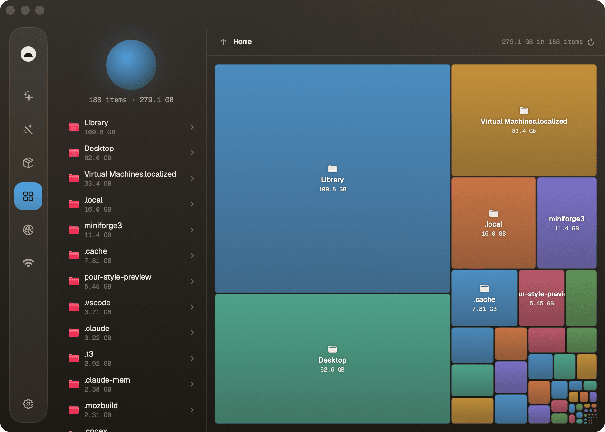
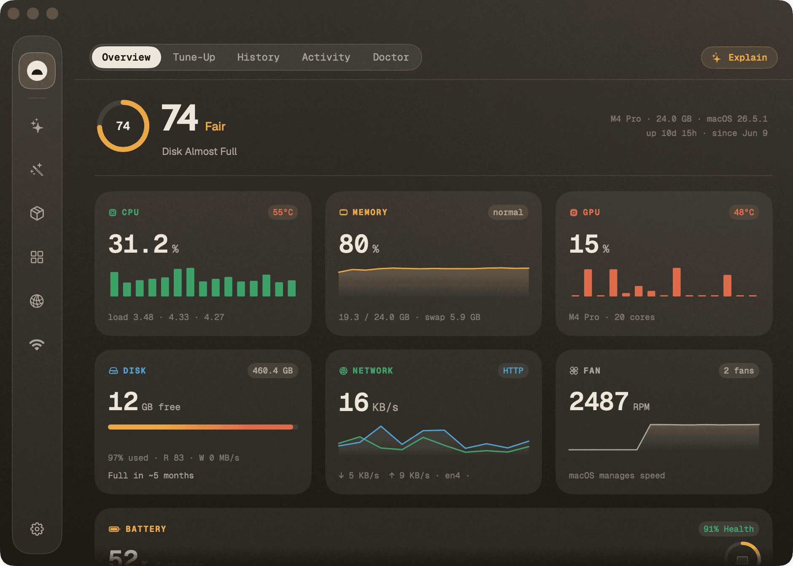
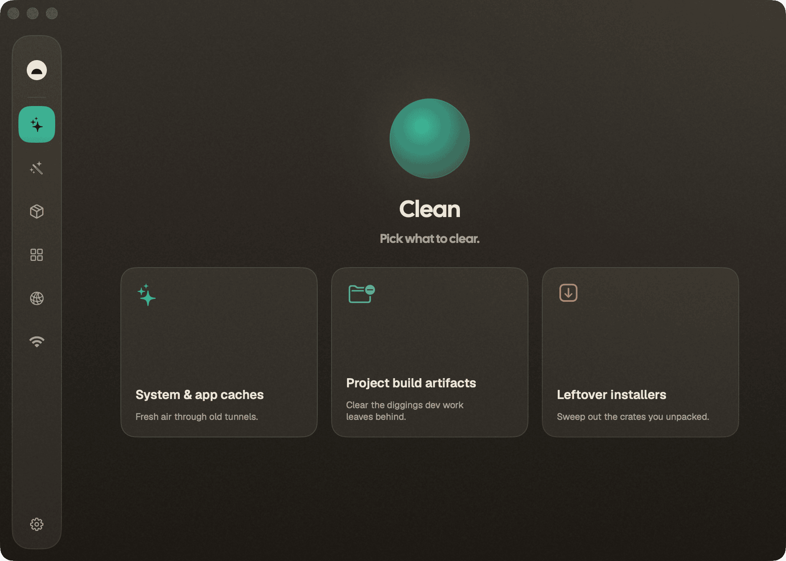
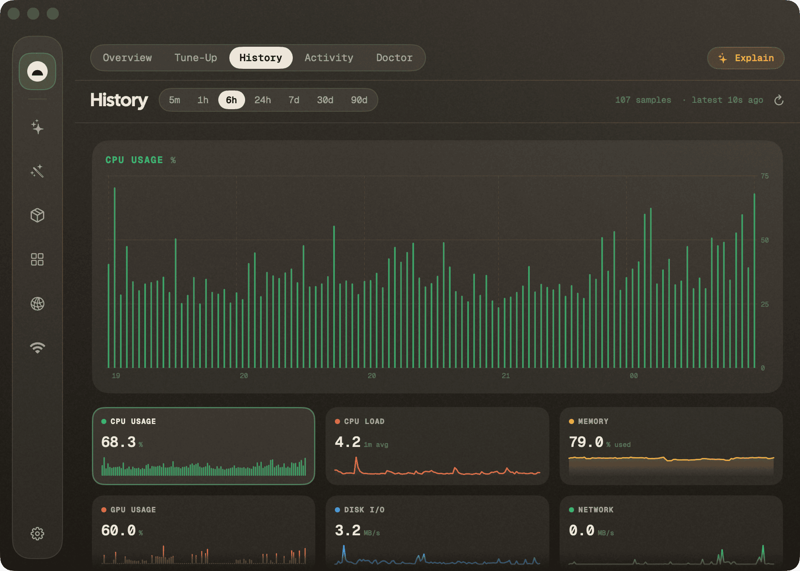
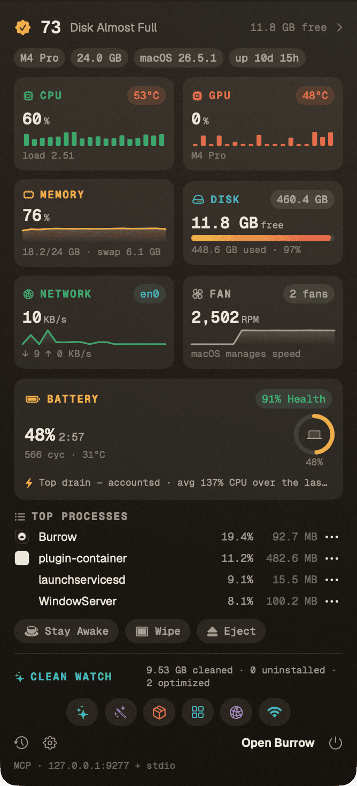

CPU usage matches the sampling window
The bundled engine keeps a baseline across refreshes, samples before collector fan-out, and sums tick deltas instead of reporting the collector's own burst.
Cleanup, duplicates, leftovers, disk maps, live status, ports. One native window on macOS and Windows, free and open source.
brew install --cask caezium/tap/burrowAlready downloaded 13,091 times

Each tool re-themes the whole window in its own colour, because the colour is how a tool tells you what it is about to touch. Every one does its job end to end, without dropping you into a terminal.
Caches, logs, and temp files across ten-plus categories, sorted by what is safest to remove. You see every file and byte before anything moves.
The diggings dev work leaves behind: node_modules, DerivedData, build output, stale package caches, all with rebuild cost shown.
The crates you already unpacked. Finds .dmg and .pkg files sitting in Downloads long after the app was installed.
Every installed app, sortable by size or recency, with multi-select uninstall that sweeps preferences, support files, and launch agents.
Rebuild Quick Look, repair caches and metadata, flush DNS, audit login items. The routine chores behind one prompt.
Smart-Care in a single pass. Picks the maintenance that actually applies to your machine right now and runs it end to end.
A squarified treemap of the whole disk. Drill into any branch, then reveal in Finder or send to Trash from the context menu.
Content-hashed duplicate finder that is hardlink aware, so files shared between tools are not counted twice.
Support files, preferences, and launch agents from apps you removed long ago, matched back to the app that left them.
Perceptual matching across your library to surface near-identical shots and burst frames worth thinning out.
CPU, memory, GPU, disk, network, and battery on one page with sparklines, plus a pinnable process table and a menu-bar HUD.
Every listening port with the process behind it, so you can find what is holding 3000 without reaching for lsof.
Live throughput per interface and per process, so you can see what is actually using the connection.
A guided path back to the surface when the connection drops: DNS, gateway, captive portal, and interface checks in order.
Every status sample lands in a local SQLite file. Scrub from five minutes out to ninety days, with peak-per-process tables.
Twenty-six MCP tools expose the whole app to Claude Code, plus a loopback HTTP API. Read-only by default; destructive actions opt in separately.
Every screen below is the real app on a real Mac, with no mockups.
A squarified treemap of every folder, sized by what it really costs you. Drill down until the culprit is obvious, then act on it without leaving the map.
Analyze
CPU, memory, GPU, disk, network, and battery share one page, each with a sparkline. The process table sorts and pins so the thing spinning your fans stays in view.
Status

Clean sorts everything it finds by how safe it is to delete, and shows the file list and byte count before anything moves. Untick what you want to keep; nothing goes on a single mis-tap.
Clean

Status samples land in a local SQLite history you can scrub from five minutes out to ninety days, with peak-per-process tables for the moments the fans actually spun up.
History

A HUD that drops the full picture down without opening the app: live metrics, top processes, and a jump into whichever tool you need.

The built-in MCP server exposes burrow_snapshot, burrow_history, and burrow_top_processes to any agent, plus a loopback HTTP API on 127.0.0.1:9277. Both stay local.
Agent · MCP

The bundled engine keeps a baseline across refreshes, samples before collector fan-out, and sums tick deltas instead of reporting the collector's own burst.
Translocation, ordinary network failures, and cancellation stay measurable without becoming Sentry defects; actionable failures still produce one scrubbed diagnostic.
Normal menu-bar creation waits one second after launch before entering its existing stability window, while the exact macOS 27 Beta 4 safeguard remains in place.
Every line is public and MIT-licensed, so you can read it, audit it, or fork it. See the repo.
Every action lists the files and the bytes first. You confirm; Burrow acts. No background root helper: macOS's own dialog asks you.
Scans, metrics, and history never leave the machine. Anonymous, opt-out diagnostics are listed field by field in TELEMETRY.md.
Every tool, the menu-bar HUD, history, and the MCP server, on as many machines as you like.
Installs the Developer ID-signed, notarized app with its bundled engine, preserving quarantine so Gatekeeper can validate Apple's ticket.
Grab the notarized zip, unzip into /Applications, and keep quarantine intact so Gatekeeper can verify the ticket.
Needs xcodegen. Produces a locally ad-hoc-signed GUI with checksum-pinned frameworks.
Windows 10/11 (beta) · downloadable preview: BurrowWin zip with the burrow.exe conductor and engine bundled (installer coming).
Yes. MIT-licensed, with no accounts, no trial limits, no paid tier, and nothing bundled in. The full source is on GitHub if you want to read it before you run it.
Every action shows the file list and byte count before it runs, and Clean sorts categories by how safe they are to remove. There is no background root helper: when a task needs admin rights, macOS's own dialog asks you, Burrow runs that one command, then exits.
Caches and temporary files that apps regenerate on their own: browser caches, developer build artifacts, app support caches, logs, leftover installers. Package caches and build output with real rebuild cost stay unchecked until you confirm them yourself.
No files, paths, URLs, or metrics. Scans and history stay on the machine, and the MCP server is loopback only. Burrow does send anonymous, opt-out usage and crash diagnostics, disclosed field by field in TELEMETRY.md. One Settings switch turns it off, and source builds ship inert.
No. Burrow runs a safe scan without it. Granting it lets Burrow reach deeper App Support and container caches, and you can grant or revoke it whenever you like.
Yes, from 0.11.0 onward, and a tag cannot publish unless signing, notarization, stapling, and Gatekeeper assessment all pass. Archived 0.10.5-and-earlier builds predate that: right-click and choose Open if Gatekeeper blocks one. The full contract is in SECURITY.md.
Twenty-six MCP tools cover snapshots, history, top processes, disk analysis, duplicates, ports, network, and more. Fourteen are read-only and available immediately; the ones that change your machine need their own explicit opt-in. The full list is in agent-tools.md.
A native WinUI 3 and .NET 8 port is in active beta, reaching parity tool by tool. macOS is the mature flagship; the Windows preview ships as a zip today, with an installer coming. Track it on GitHub.
Building from source, wiring up the MCP server, or anything else? It is all in the README.